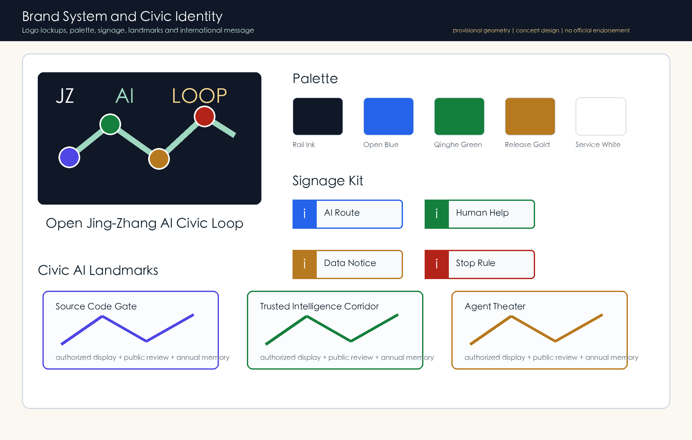
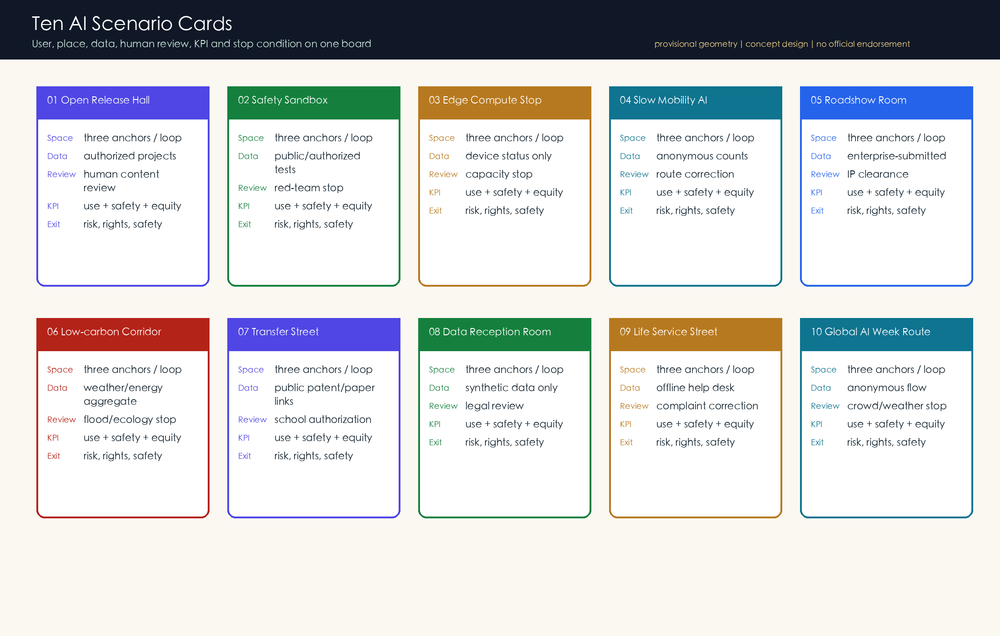
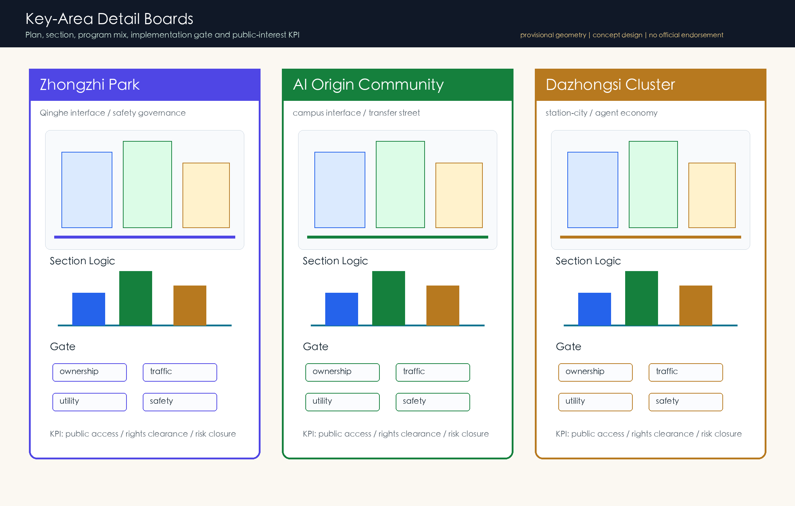
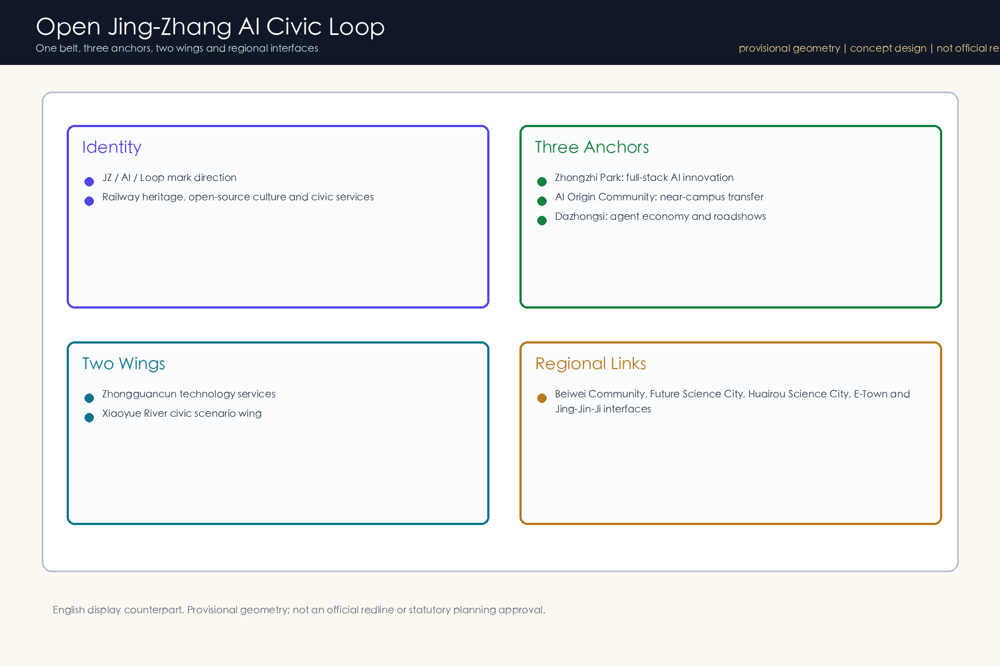
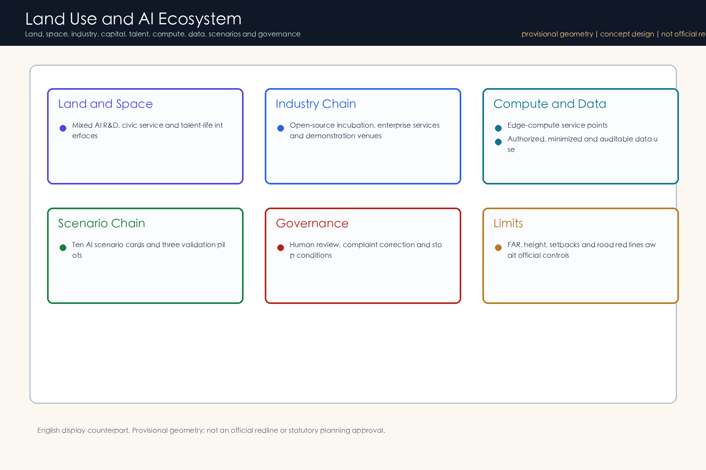
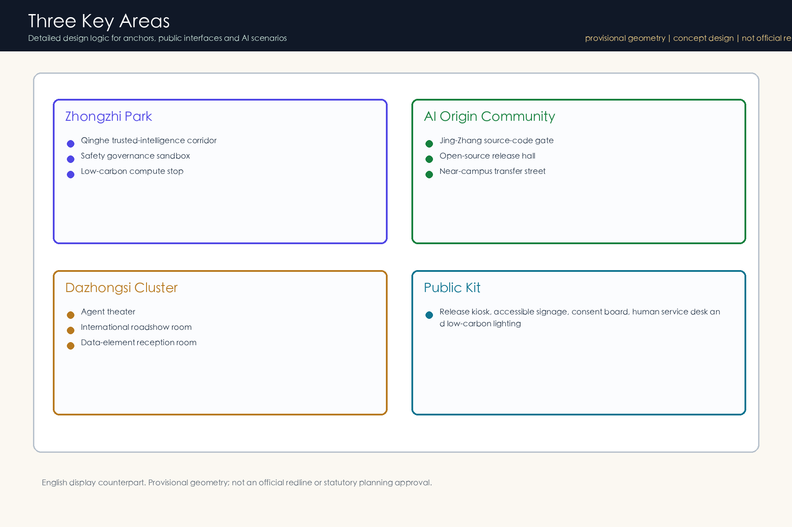
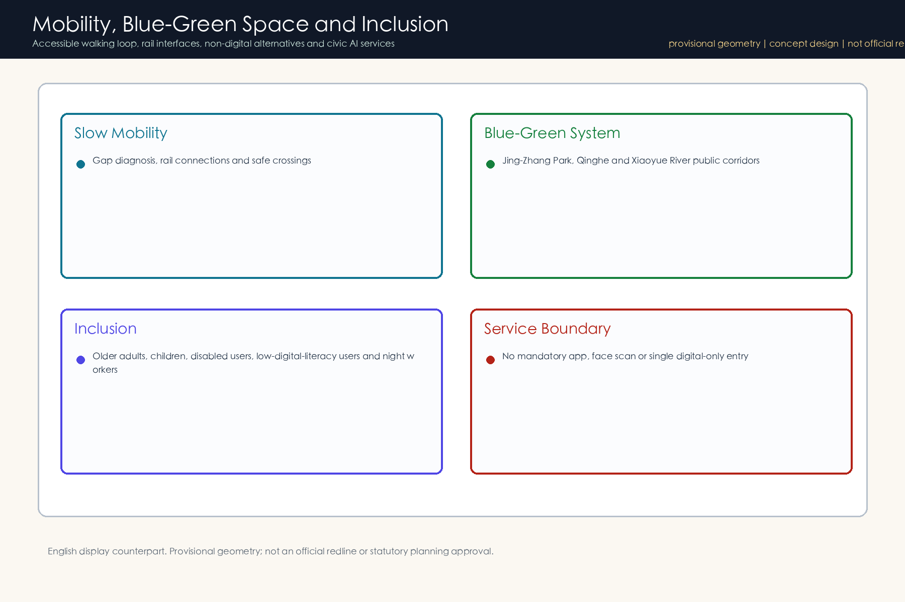
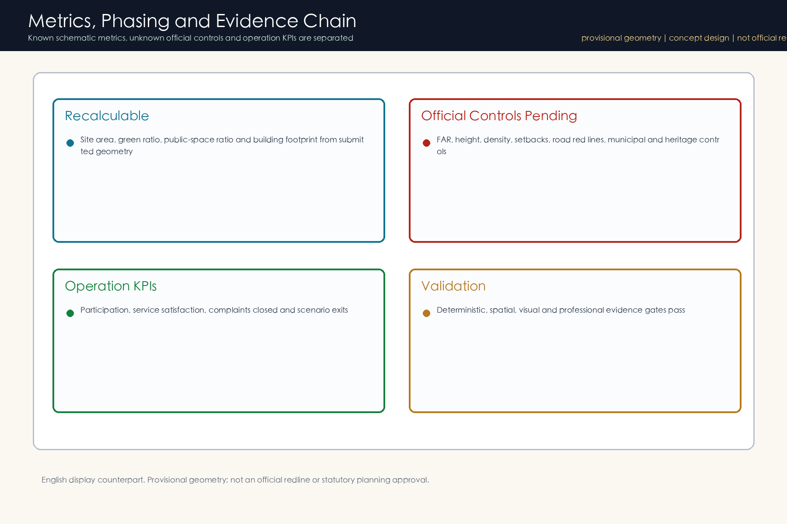
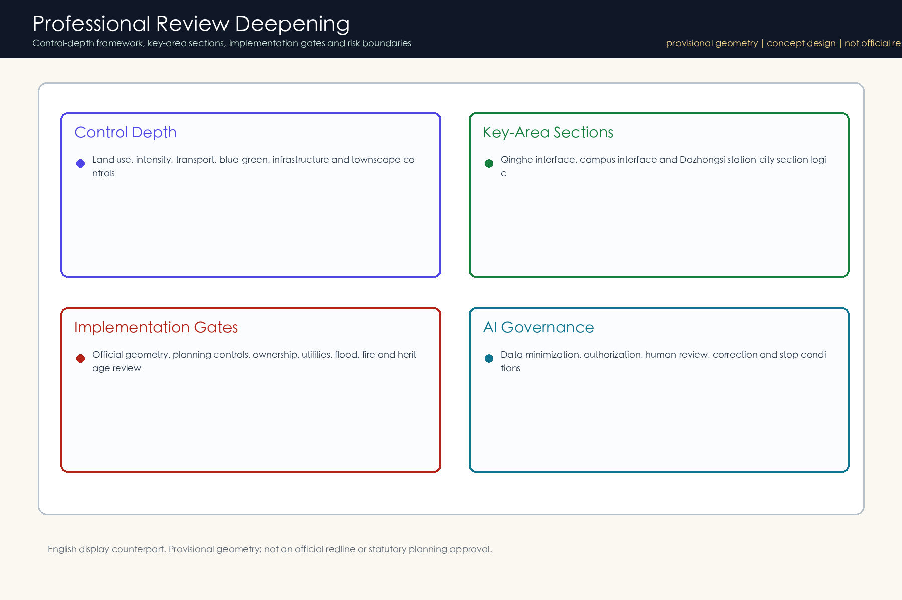

Brand System

Scenario Cards

Key-Area Detail Boards

Concept Overview
One belt, three anchors, multiple AI scenarios and a blue-green walking loop connect railway heritage, open-source collaboration and civic services.

Land Use and Ecosystem

Key Areas

Mobility and Inclusion

Metrics Evidence

Professional Review Deepening
Control-depth items, key-area sections, implementation gates and risk boundaries are separated to avoid treating concept values as statutory controls.
